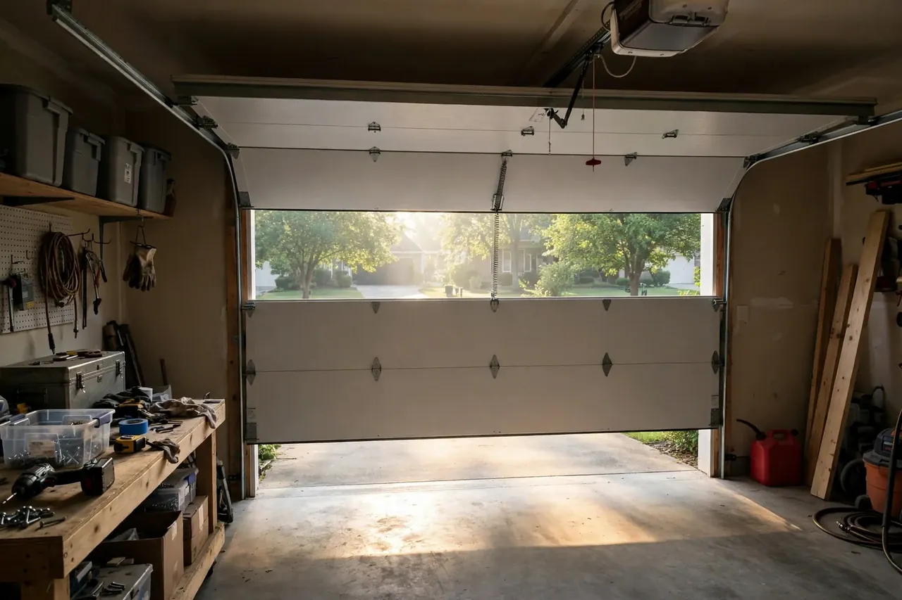

Garage Door Maintenance & Tune-Up
Garage Door Maintenance & Tune-Up in Zion, IL
Garage door maintenance in Zion, IL is the preventive side of garage door work: checking the door before it fails rather than repairing it after. A tune-up is the same job under its other common name. This page explains what a tune-up visit generally includes in general-guide checklists, how often servicing is suggested, which safety checks are routine verification, and what homeowners can safely do versus what stays technician-only.
Service overview
What a Tune-Up Visit Generally Includes
General guides describe a tune-up checklist covering springs, cables, rollers, hinges, tracks, the opener, safety sensors, auto-reverse, balance, lubrication, hardware tightening, and seals. That checklist is general-guide language: the exact checklist for any visit is not asserted here as this business's checklist, and the contents of a visit are established on the call.
Maintenance, tune-up, safety inspection, and weather sealing are one job family, not separate services. Safety-test content here is framed as routine verification, while the same tests on the garage door opener repair and installation in Zion, IL page are framed as fault diagnosis after a failure. Seals and lubrication sit inside the checklist as items, not as standalone pages. The pattern fits both the attached garages of West Zion and Harbor Ridge and the alley-loaded detached garages of Central Zion.

Practical benefits
What Regular Maintenance Is For
Maintenance is the only preventive page on this site. Every other core page is reactive or purchase-led. Four purposes explain what a tune-up is for, and what it is not.
Catching Wear Earlier
A tune-up can catch wear earlier: fraying cables, worn rollers, loose hardware, and tired seals are visible before they fail. Catching wear earlier is not a promise that nothing will fail. No maintenance visit prevents every failure, and this page makes no such claim.
Quieter, Smoother Travel
Lubrication and hardware checks address noise and movement complaints: squeaking from dry hinges and rollers, and binding from loose or worn hardware. Grinding points toward worn rollers or track problems, which is a repair question on the garage door off-track repair in Zion, IL page.
Safety Checks as Routine
Sensors, auto-reverse, and balance are checked as routine verification on a maintenance visit: confirming that the safety systems work, rather than diagnosing why they stopped. Fault diagnosis after a failure belongs on the opener page, where the same tests are framed differently.
Seals and Drafts
Bottom seals and perimeter weatherstripping wear, crack, and shrink. Gaps around the edges let in drafts and water, and a worn bottom seal can freeze to the ground in cold weather. Seal condition is a checklist item, checked alongside the hardware.
What a Visit Typically Involves, in General Terms
How a Maintenance Visit Generally Runs
General guides describe a maintenance visit as a sequence: look and listen, verify safety systems, check hardware, lubricate and tighten, and check seals. The sequence below follows that general-guide order. That sequence is general-guide language: the exact sequence for any visit is not asserted here as this business's sequence, and the contents of a visit are established on the call.
STEP 01
Look and Listen
The visit generally starts with the door running through a cycle while its movement and sound are observed. Grinding, squeaking, jerking, and hesitation each point toward different checks, and the observation shapes what follows.
Checklist items
The Tune-Up Checklist, Item by Item
Springs: Visual Check
Springs are checked visually for gaps, rust, and wear. Springs work under high tension, so the check is observation only. Any spring work is technician-only, and spring questions are covered on the garage door spring replacement in Zion, IL page.
Cables: Visual Check
Cables are checked visually for fraying, broken strands, looseness, and position on the drums. Like springs, cables work under tension and are observed, not handled, on a maintenance visit.
Rollers
Rollers are checked for wear, wobble, and noise. Worn rollers bind and grind, and a worn roller can leave the rail. Roller condition is part of the same check as track condition.
Hinges
Hinges are checked for wear, cracking, and loose fasteners. Hinges fold at every cycle, so they wear steadily, and a cracked hinge lets a section sag and bind.
Tracks
Tracks are checked for alignment, debris, and bracket tightness. A track out of plumb or full of debris binds rollers, and loose brackets let the track shift under load.
Opener Operation
The opener is run through cycles and its behavior observed: travel, force, and response to controls. Diagnosis of opener faults belongs on the opener page; here the opener is one item in a routine check.
Safety Sensors
Photoelectric safety sensors at the base of the tracks are checked for alignment and obstruction as routine verification. A blinking sensor light or a door that will not close is a fault-diagnosis question on the opener page.
Auto-Reverse
Auto-reverse is verified as a routine check: the door should reverse when its path is blocked. Federal rules (16 CFR Part 1211, UL 325) require residential automatic garage door operators to have entrapment protection: an inherent reversal system plus a secondary entrapment protection device (such as photoelectric sensors or an edge sensor) or a constant-contact control. Sensors and auto-reverse should be tested regularly.
Balance
Balance is verified by seeing whether the door holds at halfway when moved by hand with the opener disconnected. A door that drifts or drops is a balance question for the spring page, not a maintenance adjustment.
Lubrication
Lubrication of hinges, rollers, and springs is a general-guide checklist item. It quiets squeaking, eases travel, and slows wear. Lubrication does not fix worn parts: a grinding roller needs a repair check, not only lubricant.
Seals and Weatherstripping
The bottom seal and perimeter weatherstripping are checked for wear, cracking, gaps, and fit. Worn seals let in drafts and water, and a bottom seal can freeze to the ground in cold weather. Seal replacement is a maintenance task, covered here rather than on its own page.

Where this service fits
When a Maintenance Visit Fits
A New Home With No Service History
Moving into a Zion home with no record of door service leaves the door's condition unknown. A maintenance visit establishes a baseline: what is worn, what is sound, and what needs a repair page rather than a checklist. Housing age alone does not establish door condition.
A Door That Has Started Groaning or Shaking
New noise or movement is a reason to check, not to wait. Squeaking points toward lubrication and roller wear, while grinding, jerking, or shaking points toward rollers, track, or balance, with the repair questions on the garage door off-track repair in Zion, IL and spring pages.
A Pre-Winter Check
Northern Illinois winter guides commonly suggest a pre-winter check. The reasoning is hypothesis, labelled as such: cold-stiffened springs, seals freezing to the ground, and opener strain in cold weather are climate-plausibility arguments, not measured Zion demand. A pre-winter check is commonly suggested in winter guides; it is not a proven seasonal pattern.
A Post-Winter Check
Post-winter damage discovery is also hypothesis: seal wear, track and roller wear, and opener strain accumulated over winter may plausibly be found once regular use resumes. No source quantifies this, so it is framed as a check after winter, not as an expected failure.
Local execution
Maintenance Across Zion's Housing Stock
Maintenance questions follow housing age. Zion's stock is old, with 88.9% of homes built before 2000 (ACS 2020–2024 5-year), and the garage patterns split between the alley-loaded detached garages of the older grid and the attached, garage-forward subdivisions of the west. The checklist is the same; the ages it is applied to differ.
West Zion
The western sector parent, median year built 1998. Attached, garage-forward, two- to three-car garages predominate, with original doors and openers from the 1990s to 2010s build waves inferred to be at different ages by subdivision.
Harbor Ridge
Mid-1990s subdivision in the western sector, with attached two-car garages and openers evidenced in listings. Original mid-1990s doors and openers are inferred to be now around 25 to 30 years old, a replacement-cycle age band.
Sunset Ridge
Built 1994 to 2005, with attached two- to three-car garages inferred. 1990s doors and openers are inferred to be in a replacement cycle, which makes routine checks a way to find wear before failure.
Cypress Park
Built 2006 to 2010 by Pulte Homes, with attached two- to three-car, garage-forward homes. Doors and openers are inferred to be now 15 to 20 years old, the age band where routine checks start finding wear.
Central Zion
Median year built 1950, with alley-loaded detached garages characteristic of the older grid. Door and opener ages vary widely, and a maintenance visit establishes a baseline where no service history exists.
Cold Winters
Cold winters bring general-guidance failure language only: cold-stiffened springs, brittle seals, and opener strain in cold weather. January mean temperatures run around 20°F, with about 38 inches of snow a year in the nearest long-record normals.
Pre-Winter Checks Are Hypothesis
The idea that cold weather raises failure rates, and that pre-winter tune-ups catch it, is a climate-plausibility hypothesis, not measured demand. No seasonal demand pattern has been measured for Zion. The pre-winter check rests on climate reasoning alone, labelled as hypothesis throughout this page.
Older Grid, Alley Garages
The older grid's alley-loaded detached garages raise distinct topics: rear-access security, alley grading at the threshold, and detached-garage electrical supply for openers. These are topics for the check, not measured failure rates.
Newer Attached Garages
2000s subdivisions such as Stonebridge Crossing and Cypress Park have attached two- to three-car garages with doors and openers inferred to be now 15 to 20 years old. Routine checks at that age find the first wear in rollers, seals, and opener behavior.
Problems we solve
Problems a Tune-Up Can Surface
A tune-up surfaces problems; it does not always fix them. The four findings below are the ones a check is designed to surface, each with the page that covers the repair.
A Door Loud Enough to Wake the House
Squeaking points toward lubrication and roller wear; grinding points toward worn rollers or track problems. The sound distinction decides whether the answer is a checklist item here or a repair check on the garage door off-track repair in Zion, IL page.
An Opener That Strains or Reverses
An opener that strains, hesitates, or reverses for no clear reason is a fault-diagnosis question. The diagnosis angle, including sensors, force, and travel, is on the garage door opener repair and installation in Zion, IL page. Routine verification here confirms the safety systems work; it does not diagnose why they stopped.
A Frayed Cable or Worn Spring About to Let Go
Fraying cables and worn springs are visible before they fail, which is the point of the visual check. Both work under tension and stay technician-only. Cable questions go to the off-track page and spring questions to the garage door spring replacement in Zion, IL page.
Cold Air and Water Coming Under the Door
Drafts and water under the door point to the bottom seal and perimeter weatherstripping. Seal condition is a maintenance item, checked here. Gaps around the edges are also a winter topic, since a worn bottom seal can freeze to the ground.

Garage door work in Zion, IL.
Clear explanationsCareful workOpen 24 hours, every dayBased in Zion, IL
Codes and safety
Codes and Safety in Zion
Routine verification is where the safety rules below meet everyday ownership. The statements below are the only code, permit, and licence statements this page makes. Sensor and auto-reverse checks are routine verification on a maintenance visit; fault diagnosis after a failure belongs on the opener page.
- Zion has adopted the 2021 International Building Code and 2021 International Residential Code, effective January 1, 2025, with local amendments.
- Illinois does not issue a statewide licence covering garage-door work; the only general building-trade contractor licences issued statewide are for roofing and plumbing. Whether City of Zion contractor registration applies to garage-door contractors was not confirmed — ask the City of Zion Building Department.
- Federal rules (16 CFR Part 1211, UL 325) require residential automatic garage door operators to have entrapment protection: an inherent reversal system plus a secondary entrapment protection device (such as photoelectric sensors or an edge sensor) or a constant-contact control. Test sensors and auto-reverse regularly.
- No Illinois battery-backup mandate for garage door openers was found.
- Whether a City of Zion permit is required for garage-door work, and any fee, was not confirmed on a City source. Contact the City of Zion Building Department, 2828 Sheridan Road, (847) 746-4018, before work begins.

Where we work
Garage Door Work Across Zion, IL
Central ZionSouth Central ZionBeulah ParkJoannaHermonKedron ParkWest ZionHarbor RidgeShepherds CrossingLorelei AcresStonebridge CrossingSunset RidgeCypress ParkCountrywood HillsBrighton PondsButterfield PlaceWestside HillsHighland MeadowsSheridan HillsSheridan LakeSheridan Lake ViewBartletts North Shore Acres
View all Zion areas Notes from local customers
What Zion Customers Say
The crew was proficient and competent, and they made my garage seem better than before.
Premium components were used to rebuild my garage door for reasonably low running cost.
I had a thorough safety check on my garage door, the technician was very detailed.
Before the visit
Frequently Asked Questions About Maintenance and Tune-Ups
Still wondering?(224) 842-7761
General guides describe a checklist covering springs, cables, rollers, hinges, tracks, the opener, safety sensors, auto-reverse, balance, lubrication, hardware tightening, and seals. That is general-guide checklist language: the exact checklist for any visit is not asserted here, and the contents of a visit are established on the call.
General-guide language suggests an annual baseline, with more frequent servicing for heavily used doors. That is general guidance, not a prescriptive claim about your door. How often a door is serviced is a question to settle on the call, based on the door's age, use, and condition.
Safety checks on a maintenance visit are routine verification: sensors aligned and unobstructed, auto-reverse working when the path is blocked, and the door holding at halfway. Federal rules (16 CFR Part 1211, UL 325) require residential automatic garage door operators to have entrapment protection: an inherent reversal system plus a secondary entrapment protection device (such as photoelectric sensors or an edge sensor) or a constant-contact control. Sensors and auto-reverse should be tested regularly.
Maintenance can catch wear earlier: fraying cables, worn rollers, and loose hardware are visible before they fail. It does not prevent every failure, and no maintenance visit carries a promise that nothing will fail. That is the honest expectation for any maintenance visit.
Homeowners can safely observe the door, keep the tracks clear of debris, and test sensors and auto-reverse as routine verification. Spring and cable work stays technician-only: both work under tension, and this page gives no repair instructions for tensioned parts.
A pre-winter check is a common suggestion in northern Illinois winter guides. The reasoning is hypothesis, labelled as such: cold-weather failure links are climate-plausibility arguments, not measured demand. No seasonal demand pattern has been measured.
Keep exploring
Other Garage Door Work in Zion, IL
Open 24 hours, every day
Need Garage Door Help in Zion?
Call (224) 842-7761 and describe the door: its age if known, any noise or movement change, and when it was last checked. Open 24 hours, every day.
Start with the basics
Call Milwaukee Garage Doors Inc
Reach us at (224) 842-7761 for garage door maintenance and tune-ups in Zion, IL. Describe the door and what, if anything, has changed, and the call can establish the next step. Open 24 hours, every day.
CALL(224) 842-7761
HOURSOpen 24 hours, every day